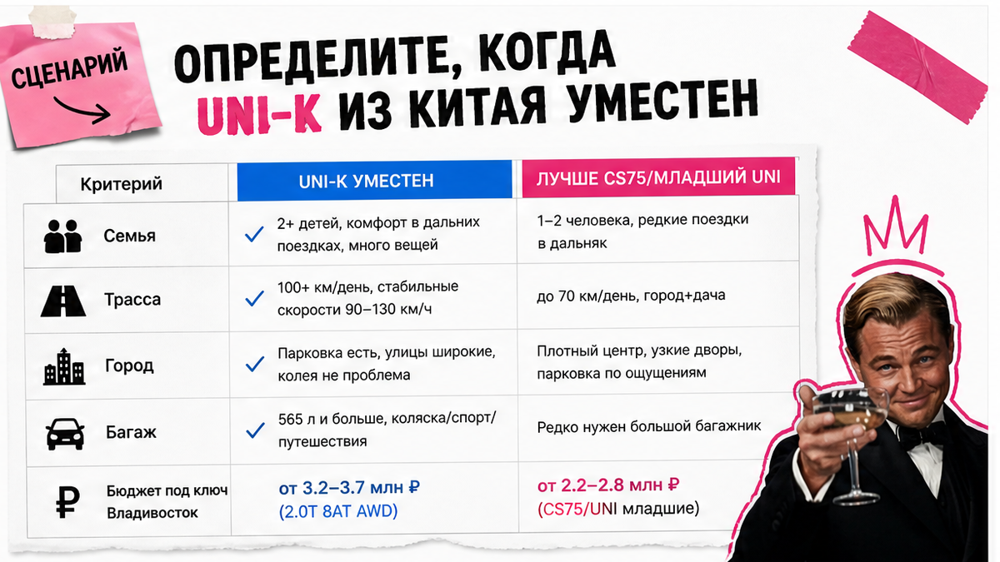
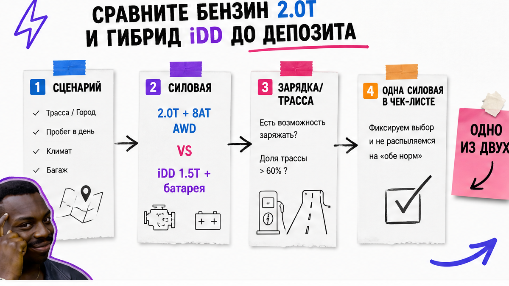
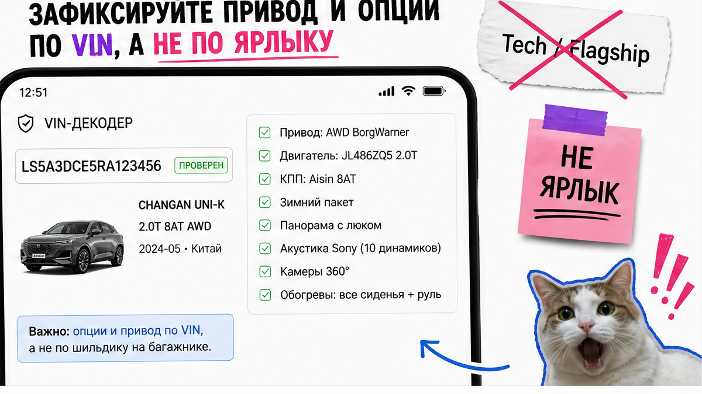

Вы уже почти кинули предоплату за "UNI-K Tech полный фарш": на фото панорама и огромный экран, в чате пишут "AWD и зима ок", а в договоре только "автомобиль Changan UNI-K" без мотора, привода и списка опций. Классическая ловушка до депозита. Ниже – спокойный чеклист: как выбрать Changan UNI-K из Китая, зафиксировать 2.0T или iDD, 2WD/AWD и must-have опции по VIN, и не платить, пока нет сметы под ключ через Владивосток.
Инсайт до депозита: Ярлык Tech/Flagship в объявлении не равен оснащению официального РФ-салона. Сначала сценарий и силовая установка, потом привод, потом список опций по VIN и фото. Депозит – только после договора с юрлицом и полной сметы (машина + логистика + таможня + СБКТС + ЭПТС), а не по "цене только в Китае".
Параллельный импорт и дилерский Comfort/Luxe/Techno – разные миры. На практике владельцы сравнивают "китайский" AWD и официальный экземпляр и видят: у партий из Китая часто урезаны акустика и ассистенты, а зимний пакет (подогрев лобового, задних сидений) может отсутствовать. Смотреть надо не ярлык, а VIN и фото каждой опции.
Мы в Авто-Сейлс во Владивостоке ведём заказы из Китая без форм на этой странице: сначала собираете факты в блокнот, потом идёте в каталог за сметой. Цель простая – ни одной оплаты, пока нет четырёх решений: мотор, привод, must-have опции, стоп-условия оплаты.

UNI-K – большой кроссовер (~4865 мм в длину, база 2890 мм). Он имеет смысл, если нужен просторный салон и готовы ждать логистику через Владивосток. Если нужен только городской кроссовер поменьше или срочная выдача "завтра из салона" – сравните официальный РФ-канал или младшие модели линейки, а не гонитесь за Telegram-"суперценой".
Честно говоря, новичок часто путает "из Китая дешевле" с "уже готов к зиме РФ". Разница рынков – в опциях и документах, а не в красивом экране на фото. Поэтому сначала сценарий и чеклист, потом деньги.
Сделайте: запишите в 3–4 строки сценарий – город / трасса / зима и снег / есть ли розетка дома для гибрида. Не делайте: выбирать UNI-K только потому, что на фото "полный фарш" и скидка "только сегодня". Избегайте оплаты "сегодня или никогда" без VIN.
Схема до депозита:
Сценарий → Силовая установка (2.0T или iDD) → Привод (2WD/AWD) → Must-have опции + VIN/фото → Смета под ключ → Договор с юрлицом → Депозит

На пальцах: бензиновый UNI-K – это 2.0T около 226 л.с., автомат 8AT Aisin, привычная заправка. Гибрид iDD – другая машина: 1.5T плюс электромотор, робот 6DCT, батарея около 30,7 кВт⋅ч, заявльный запас на электротяге около 135 км и суммарно до ~1000 км по данным официального анонса в РФ. iDD нужно заряжать; без розетки дома смысл слабеет.
| Параметр | Бензин 2.0T | Гибрид iDD |
|---|---|---|
| Мотор | 2.0T ~226 л.с., 380 Н·м | 1.5T 166 л.с. + ЭМ 150 л.с. |
| Коробка | 8AT Aisin | 6DCT |
| Привод (типично) | FWD или AWD BorgWarner | Часто FWD (уточнять в лоте) |
| Зарядка | Не нужна | Нужна; быстрая 20–80% ~30 мин |
| Кому подходит | Трасса, регион без розетки | Город + дом/офис с зарядкой |
Типичная ошибка – в объявлении "UNI-K" без строки "бензин" или "iDD", а продавец устно обещает "как на фото". В договоре должно быть одно: либо 2.0T + 8AT, либо iDD с указанием батареи. Без этого депозит не вносите.
Сделайте: выберите одну силовую установку и впишите её в чеклист. Проверьте, что в карточке лота есть явная строка "2.0T" или "iDD". Не делайте: оставлять формулировку "разберёмся после оплаты".

Передний привод (2WD) нормален для города и юга. Полный (AWD BorgWarner NexTrac) нужен, если зима, грунтовка и уверенность на снегу важны. В договоре и карточке лота должно быть явно: 2WD или AWD – "как на фото похоже" не считается.
Названия Tech / Flagship / Luxe в параллельном импорте часто врут чаще VIN. Например, в реальном проекте сравнения ПИ и официального дилера на DRIVE2 видно: у китайских AWD-партий режут акустику Sony, ассистенты и зимний пакет. Список must-have держите коротким – до 7 пунктов: камеры 360°, адаптивный круиз, подогрев руля/сидений/лобового, вентиляция, панорама, число динамиков, зимний пакет.
Используйте только VIN + фото, а не ярлык в чате. Не делайте: верить названию комплектации в Telegram-объявлении. Избегайте устных обещаний без фото опции.
Цена "в Китае" без растаможки – не цена владения. До депозита нужна письменная смета под ключ: автомобиль, логистика, таможня, СБКТС (сертификат безопасности конструкции), ЭПТС (электронный паспорт). Точные суммы в статье не публикуем – их считают под конкретный лот в каталоге и переписке.
Ориентир по срокам, не обещание даты: море Китай → Владивосток часто считают около 7–14 дней, полный цикл заказа до выдачи – вилка в недели (у логистов встречаются ориентиры 2–5 недель и шире). СВХ во Владивостоке – склад временного хранения, где машина проходит оформление перед выдачей по России.
Актуальный расчёт под ваш VIN и маршрут – в каталоге avtosales125.ru. Детали комплектации и осмотра удобно уточнить в Telegram avtosales125.
Проверьте смету со строками логистика/таможня/СБКТС/ЭПТС до перевода. Не делайте: платить "только за авто в Китае" без полного пакета. Используйте письменную смету, а не скрин "цены в Китае".
Стоп, если давят "только сегодня", просят оплату на физлицо или крипту, в договоре нет мотора/привода/опций, а депозит берут до VIN и сметы. Юрлицо в договоре должно совпадать с реквизитами оплаты. Нужны курс и дата фиксации, сроки, условия возврата депозита и ответственность за срыв. В реальном проекте именно размытая строка "автомобиль Changan UNI-K" без мотора и привода чаще всего предшествует спору после предоплаты.
Если пакет собран – можно идти за финальным подбором. Если нет – депозит не вносите, даже если фото красивое. Повторно свериться с актуальными лотами можно в каталоге Авто-Сейлс: форм на странице блога нет, бронь живёт в каталоге и переписке.
Проверьте реквизиты юрлица и стоп-условия до перевода. Не делайте: переводить "за бронь" по устной договорённости. Избегайте оплаты на физлицо и в крипту.
Результат: в блокноте зафиксированы четыре решения – силовая установка (2.0T или iDD), привод (2WD или AWD), список must-have опций, стоп-условия оплаты. Ни одной оплаты не сделано, пока нет VIN/фото опций и договора с юрлицом плюс полной сметы под ключ. Сможете сегодня отказать сомнительному продавцу одной фразой: "пришлите VIN, фото опций и смету – потом депозит".
Материал проверен: Редакция Авто-Сейлс – эксперты по авто под заказ из Японии, Кореи и Китая (офис Владивосток, Днепровская 40а, стр. 4).
Достоверность: факты сверены с дилерскими материалами Changan РФ (UNI-K 2.0T и анонс iDD), сравнениями ПИ vs ОД на DRIVE2, гайдами по схемам обмана при заказе из Китая и логистике через Владивосток на дату прогона 2026-11-05; актуальные расчёты под лот – только в каталоге и переписке, без статичного калькулятора пошлин в тексте.
Зафиксируйте в чеклисте: 2.0T – бензин и 8AT без зарядки; iDD – 1.5T + электромотор, 6DCT, батарея ~30,7 кВт⋅ч и зарядка. Выберите одно до депозита и требуйте эту строку в договоре.
Если зима и снег важны – берите AWD BorgWarner и пропишите его явно. Для города на юге часто хватает 2WD. Не полагайтесь на "похоже на полный" по фото.
Полный VIN, фото must-have опций (360°, подогревы, панорама, акустика, зимний пакет), явную строку 2WD/AWD и силовую установку. Ярлык Tech/Flagship без VIN не принимайте.
Ориентир, не обещание: морское плечо часто ~7–14 дней, полный цикл заказа считают неделями (вилки у логистов разные). Точный график – только под конкретный лот в смете.
Нет. До перевода нужна смета под ключ со строками логистика, таможня, СБКТС и ЭПТС. Иначе "вкусная" цена почти всегда неполная.
Пройдите чеклист выше: сценарий → мотор → привод → VIN-опции → смета → договор. Если пакет готов – откройте каталог Авто-Сейлс или напишите в Telegram avtosales125; если нет – депозит не вносите.